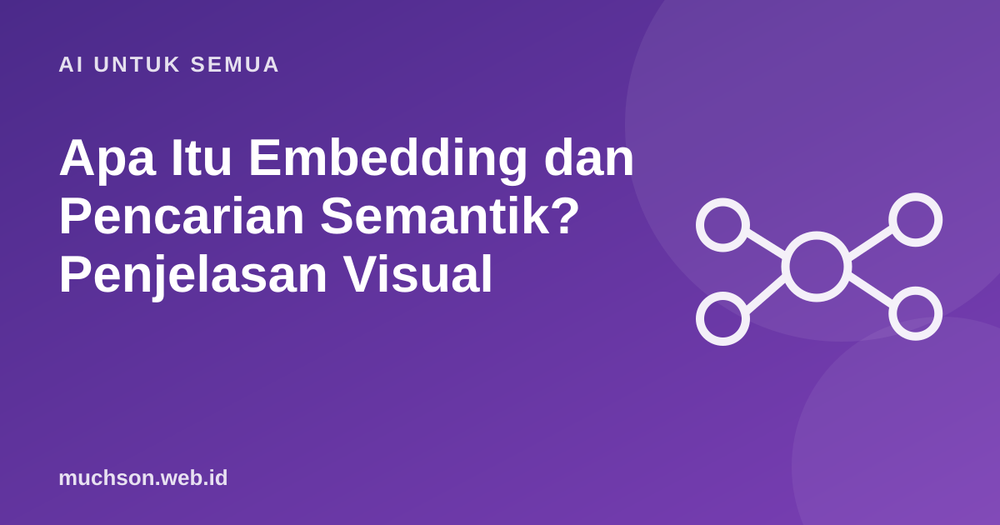

Beranda › Artikel › AI untuk Semua
AI untuk SemuaApa Itu Embedding dan Pencarian Semantik? Penjelasan Visual
Pencarian biasa menemukan kata yang sama persis. Pencarian semantik menemukan hal yang maknanya mirip, walau kata-katanya berbeda. Kuncinya adalah embedding: cara komputer menaruh makna ke dalam angka.

Makna sebagai posisi di peta
Bayangkan peta tempat setiap kalimat punya titik. Kalimat yang maknanya dekat ditaruh berdekatan: "mobil rusak" dekat dengan "kendaraan mogok", tetapi jauh dari "resep nasi goreng". Embedding adalah koordinat titik-titik itu, dalam bentuk daftar angka (vektor) yang biasanya punya ratusan atau ribuan dimensi.
Bagaimana pencarian semantik bekerja
Bandingkan dengan pencarian kata kunci
Bukan hanya untuk pencarian
Embedding yang sama dipakai oleh pencarian dokumen, rekomendasi, pengelompokan topik, dan deteksi duplikat. Cara kerjanya sama: makna menjadi jarak.
Tanya jawab
Apa itu database vektor?
Database yang dirancang menyimpan embedding dan mencari yang terdekat dengan cepat. Untuk dokumen sedikit, penyimpanan biasa sudah cukup.
Apakah embedding sama dengan token?
Bukan. Token adalah potongan teks yang diproses model. Embedding adalah representasi angka dari makna teks.
Apakah embedding bisa dipakai untuk bahasa Indonesia?
Bisa. Pilih model embedding yang mendukung bahasa Indonesia dan uji dengan data Anda.